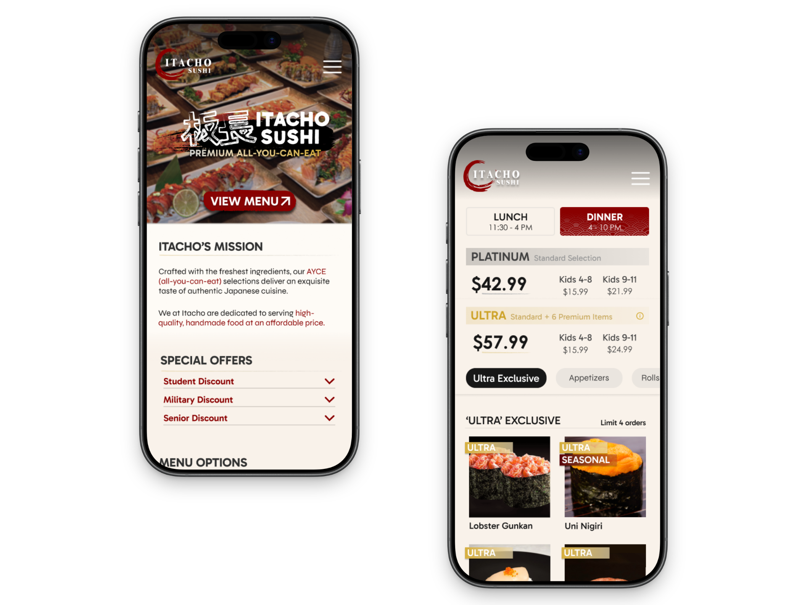
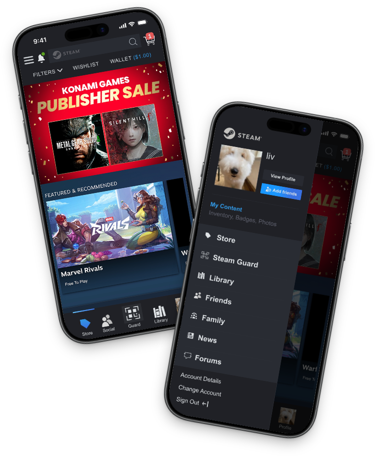
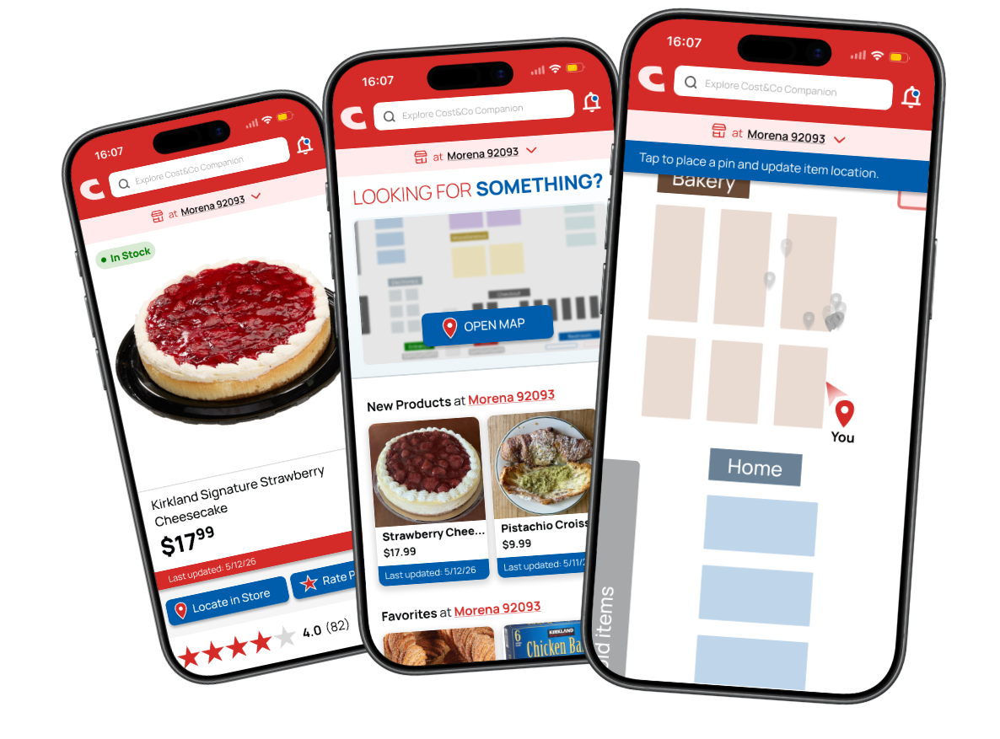
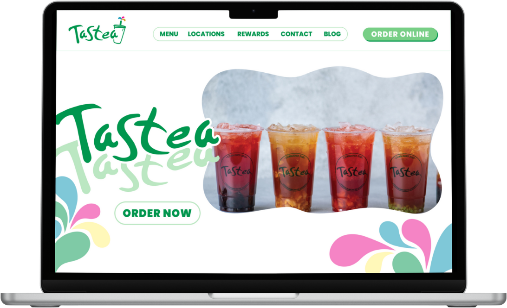

Pikmin Bloom Accessibility
Spring 2026Reimagining movement and touch interactions in Pikmin Bloom to create more accessible gameplay for players with mobility and dexterity limitations
please do not click the tree
Product Designer
Reimagining movement and touch interactions in Pikmin Bloom to create more accessible gameplay for players with mobility and dexterity limitations

Restructuring a complex AYCE menu across three pricing tiers, balancing intuitive navigation with the restaurant's established brand identity
NASA's X-59 Quiet Supersonic Project

Redesigning Steam's mobile navigation to improve discoverability through a new information architecture and persistent navigation system

A community-driven app that reduces Costco shopping stress through real-time navigation, product locations, and inventory insights

Designing a physical kiosk interface built to bridge information access for unhoused populations seeking local essential resources

Redesigning the Tastea website to improve user experience